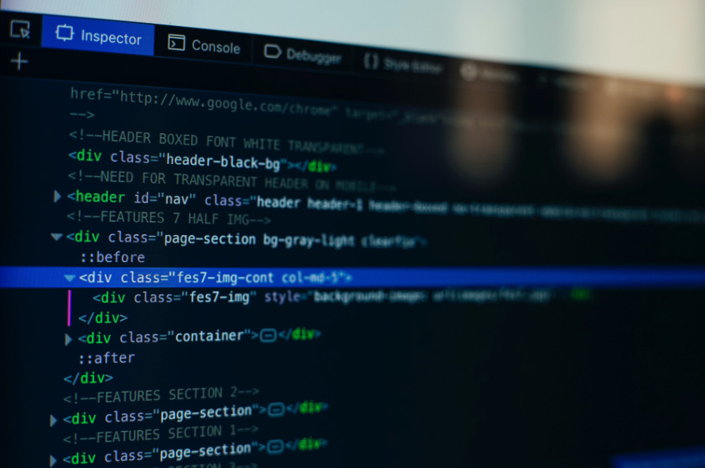

Web Sitelerinin Temeli: HTML
Sinem Umursamaz tarafından Pazartesi, 21 Haziran 2027 tarihinde yayınlanmıştır.
Bütün modern web siteleri ve uygulamaları 3 temel teknoloji üzerine inşa edilmiştir: HTML, CSS ve JavaScript. Bu üç teknoloji web'in temel dilleridir.
Bu postda, haydi HTML üzerine odaklanalım. Birlikte HTML'in ne olduğunu ve neden öğrenmemiz gerektiğini öğreneceğiz.
HTML Nedir?
HTML HyperText Markup Language kelimelerinin kısaltmasıdır. HTML bir programlama dili değildir. Bir işaretleme dili denilebilir. Web geliştiriciler bu dili web sayfalarını düzenlemek ve şekillendirmek için kullanırlar.
HTML, bu işlemlerde değişik tiplerde elemanlar kullanır; paragraflar, linkler, başlıklar, resimler, videolar vb. Web tarayıcıları HTML dilini ve HTML ile yazılan kodları websitesi bileşenleri olarak algılarlar.
HTML' de, her eleman 3 farklı alt bölümden oluşur:
- Açılış etiketi
- Kapanış etiketi
- Eleman içeriği
Daha ayrıntılı bilgiyi MDN Web Docs aracılığıyla ulaşabilirsiniz.
Neden HTML öğrenmeliyiz?

Web'in temel dilini öğrenmek için birçok nedeniniiz olmakla birlikte, aşağıda sizin için 5 neden sayabilirim:
- Web geliştirmenin temel dilini kullanabilmek.
- İçerik ve yapı açısından nitelikli web sitelerini Wordpress ve Wix gibi hazır şablonlardan faydalanmadan hazırlayabilmek.
- Web uygulamaları yapabilmek.
- Kendi işimiz için gerekli websitelerini sürekli güncel tutabilmek.
- Sadece eğlenmek için😄
Ümit ederim ki burada yeni bir yetenek kazanacaksınız. Bir sonraki sefer görüşmek üzere!